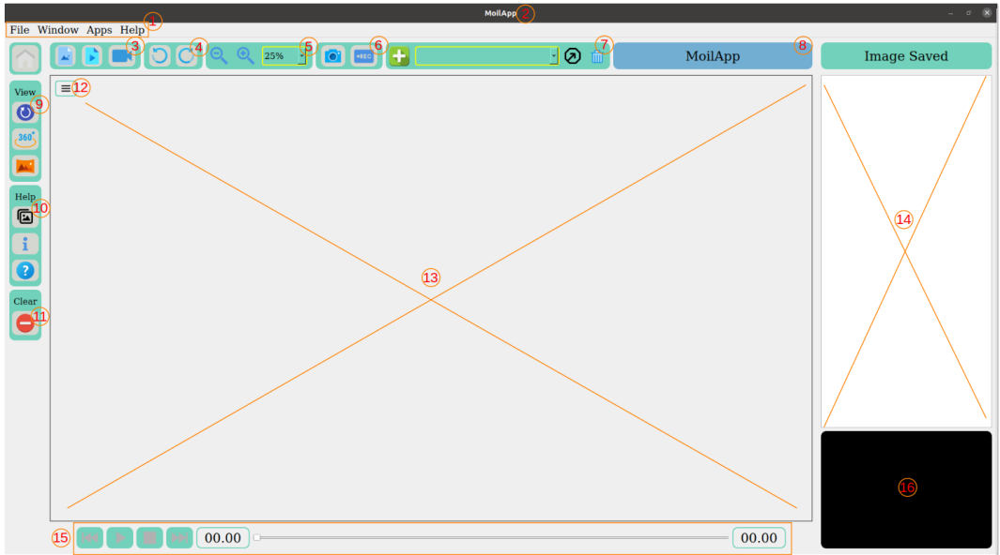

Operation of MoilApp
In this session we will explain the components in the MoilApp application and
tutorials on how to use the application.
Overview of The User Interface

Here is detail explanation:
1. Menu bar
This container stores various button
a. File
File contains Load image, Load video, Open cam, Cam parameter, Record Video, Save Image, and Exit
b. Window
Window contains Maximize and Minimize
c. Apps
Apps contains Add, Open, Delete, Create and Help for Add-Ons
d. Help
Help contains About Apps, About Us and Accessibility
2. Title application
This part will give you information about the application name and
information about image and video location as a source.
3. Source media button
This grub contains three buttons: load image, load video and open camera.
You can load images and videos from your directory and also can get images
from your camera by streaming video. On open camera you can use USB
Camera and streaming camera.
4. Rotate button
Rotate image to the clockwise and anticlockwise direction.
5. Zoom button
Make the image look bigger or smaller by zoom in and zoom out.
6. Saving button
Save the resulting image or recording video in your local directory
7. Plugin controller
The container Plugin controller contains several buttons that have functions to
control plugins such as adding, opening and removing plugin application from
the main application.
8. Information label
Show the information of the camera type used.
9. Selection mode view
This container contains several view mode selection buttons including original
view, Anypoint view and panoramic view.
10. Help button
Contains several buttons that display information from this application such
as manual guide, about us and about MoilApp
11. Clear media from widget
This button will remove all objects such as pixmap images and others from the
user interface to make the application look like it was just opened
12. Extra button
This button will be active when you select Anypoint or panorama view and
help you to explore the image.
13. Widget show result image
This widget will be showing the result image after processing, this is the main
image viewer on the user interface application.
14. Widget to show Image saved
Displaying images successfully saved which can then be reopened if your
source media is video or camera.
15. Video controller
The video controller container contains several buttons and labels that function
to control media such as start, pause, stop, forward, backward, time slider and
duration label.
16. Widget show original image
This widget serves to display and maintain the original image to provide a
reference regarding the process that occurs.